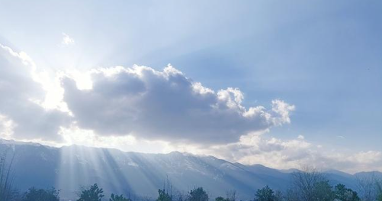
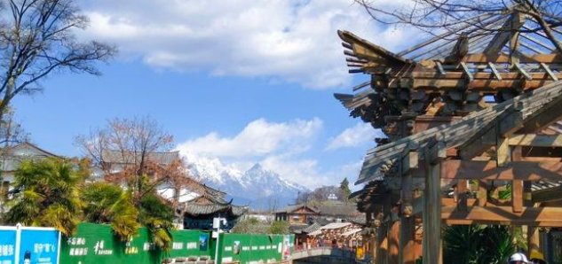
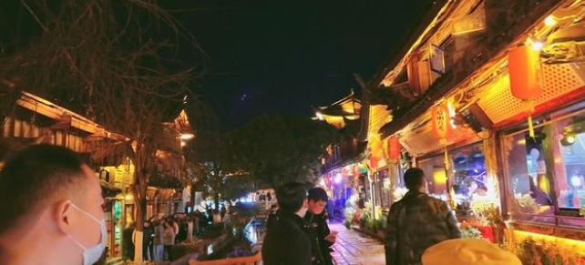
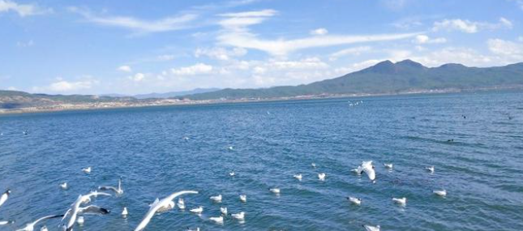

去到云南，走进丽江，感受不一样的人文风貌
偶尔放下手里的工作，与匆忙的都市生活，说再见，踏上旅途，也是给自己的慰藉。去过云南的都流连，没去过的都憧憬。没有来过云南，大概不知道云南有26个民族，在这里汉族都属于少数民族。人口最多的是彝族。这里有一望无际的天空，热情好客的居住民以及让人眼前一亮的风景。
因为是晚上的飞机，到云南的时候，已经是凌晨了，下了飞机，地面温度只有几度，怪冷的，接我们的师傅车开得很快，天太黑，一路上没有什么风景可言，天上依稀能看见几颗星星。 从酒店醒来，清晨阳光明媚，我们早早就收拾好了打算去外面逛逛，我们住在拥有东方威尼斯之称的丽江，计划着去逛逛丽江古城。这里的风真的很大，一阵风把帽子都吹掉了，紫外线也很强，路上的行人肤色都是古铜色。
路过一条巷子，能看到远处的玉龙雪山的最高峰，它仿佛也在俯瞰着整个云南。映入眼帘的是古色古香的建筑，大大小小的石板铺在地面，这便是有八九百年历史的丽江古城了。如果说晚上的丽江热闹非凡灯火阑珊，是活跃着的历史名城，那么白天的丽江是沉睡的明珠，安静而又庄严。只有白天才能静静地欣赏这座城，站在高处，看着眼前这坐落得整整齐齐的房屋，呼吸着格外清新的空气，我的感到平静感到惬意。
有人说，这里是历史文化名城，拥有非物质文化遗产的东巴象形文字，这里是世界文化遗产地，就算是打仗，这个地方也不能被破坏。 在无数的游客中，极少有人能安静地欣赏这座古城，大多数被吸引的人都是因为有名的酒吧一条街——四方街，在灯火辉煌中兴奋，在歌声中沉醉，在酒里迷茫。看地上的镶嵌着鹅卵石的石板都被磨平，走路打滑，就知道这里是无数人追寻的地方，艳遇之都。
我们去到拉市海，风景很漂亮，湖呈现蓝色，很大一片，像一颗蓝宝石，波光粼粼，被青山 环绕着。这里是候鸟的栖息地，每年都有很多种类的鸟从西伯利亚飞到拉市海过冬。我们去的时候能看到一片片的海鸥，在飞翔或被投喂。人和鸟和谐相处，这里不仅是鸟的栖息地，也是人类心灵的栖息地，大自然的美只言片语是无法描绘的。
丽江是茶马古道的线路之一，能看到养马的人很多，可以骑着马感受下，在当时那个背景下，茶马古道主要运送茶叶和马匹，是当时的重要商贸通道。这边的建筑主要是白墙灰瓦，建筑特色是三坊一照壁，四合五天井，家家户户的院落都打扫得干净整洁。 丽江的民族占比最多的是纳西族，在纳西族，女的叫胖金妹，男的叫胖金哥，传说，在纳西族都是女人当家做主，女人赚钱养家，杀猪宰羊，属于母系社会，男人只需要能养活自己就够了，而且要会抽烟喝酒，才能值几头牦牛。听着让人心动，不过也只是传说而已。